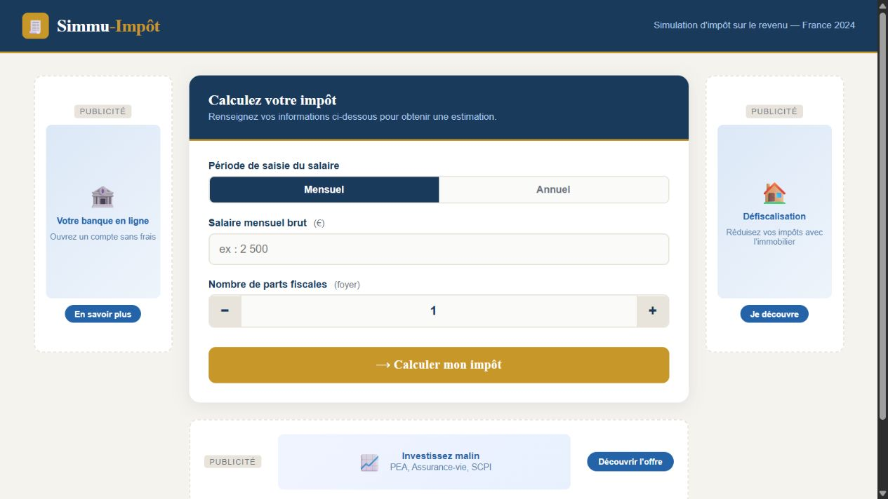

Projet 01 / Application web
Simmu-Impôt
Passer d’une saisie de revenu à un résultat détaillé, avec une interface et un calcul exécutés dans le navigateur.
- HTML
- CSS
- JavaScript

L’objectif
Proposer une interface de simulation de l’impôt sur le revenu. L’utilisateur choisit une période, saisit un salaire et ajuste le nombre de parts fiscales avant de lancer le calcul.
Le code fourni présente un barème daté de 2024. Le projet est présenté ici comme un exercice de développement.
Ce que fait l’interface
- Passage d’une saisie mensuelle à une saisie annuelle.
- Modification des parts fiscales par pas de 0,5, entre 1 et 10.
- Vérification qu’un salaire positif a été renseigné.
- Affichage du détail du calcul et d’une barre de taux effectif.
Comment le code est organisé
index.html contient les champs et les zones de résultat. style.css met en forme l’interface. script.js réagit aux boutons et met à jour le texte des résultats.
La fonction de calcul parcourt un tableau de tranches. Pour chacune, elle applique le taux à la partie du revenu concernée. Le calcul et l’affichage sont répartis entre plusieurs fonctions courtes.
Les limites du prototype
Le modèle simplifie la situation fiscale et utilise un barème ancien. Le revenu brut saisi n’est pas, à lui seul, une base suffisante pour calculer un impôt réel. Les emplacements publicitaires visibles font partie de la maquette.
Cette fiche décrit le fonctionnement du projet ; elle ne constitue pas une validation du calcul fiscal.
Contexte et contribution
À compléter avec la période du projet, son contexte et ma contribution personnelle.
Difficultés et apprentissages
À compléter avec une difficulté réellement rencontrée et ce que j’ai appris en la résolvant.
Le dépôt et une éventuelle démonstration publique seront ajoutés lorsqu’un lien sera disponible.